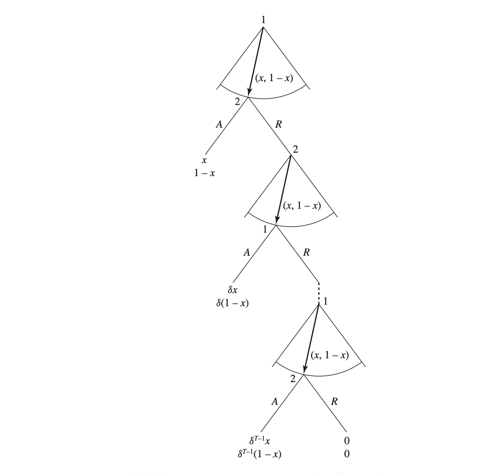

Capítulo11 Barganha
11.1 Introdução
O jogo do ultimato é talvez o jogo mais simples de barganha que existe. No entanto, ele é útil porque pode ser generalizado e trazer insights úteis.
11.2 Jogo do Ultimato
O jogo do ultimato consiste no seguinte. Serena e Martín precisam decidir como dividir um pedaço de bolo de tamanho \(1\). O pai informa que primeiro Serena fará uma proposta de divisão de \(X\) para ela e \(1-X\) para Martín. Se a proposta for aceita, o bolo é dividido daquela forma. Se for negada, ninguém fica com o bolo (porque não chegaram a um acordo).
É fácil ver que a proposta \((1,0)\), isto é, Serena pega todo o bolo e Martín fica sem nada é um equilíbrio de Nash, pois nem Serena nem Martín podem melhorar unilateralmente.
De maneira genérica, o jogo do ultimato pode ser generalizado da seguinte forma4:

11.3 2 períodos
Vamos modificar o jogo do ultimato e admitir que se alguém não gosta da proposta da outra pessoa, pode fazer uma contraproposta, sempre de maneira alternada. Porém, o jogo acaba em até \(T\) rodadas se um acordo não for alcançado e ninguém fica com o bolo neste caso.
Como existe passagem de tempo, precisamos descontar o futuro. A forma mais geral do problema é assumir que ambos Serena e Martín descontam o futuro em \(0 < \delta_i < 1\), isto é, um acordo alcançado no período \(t\) com uma parcela \(s_i\) gera um payoff ou utilidade equivalente a \(s_i \delta_i^{t-1}\) no presente. Porém, vamos simplificar e assumir que Martín e Serena têm a mesma taxa de impaciência \((\delta_i = \delta_j = \delta)\).
O Equilíbrio de Nash Pefeito em Subjogo pode ser achado por indução reversa.
No período 2 (o último), temos um novo jogo do ultimato, e Martín irá oferecer todo o bolo para si e nada para Serena, e isso é um equilíbrio de Nash neste subjogo. Designando a oferta no período \(t\) por \(X_t = (X_1, 1 - X_1)\), e considerando a oferta é \(X_2 = (0,1)\), o equilíbrio neste subjogo é \(X(0,1)\), com payoffs \(u_1 = 0\) e \(u_2 = \delta\). No período 1, se Serena oferecer menos do que \(\delta\) para Martín, ele não aceitará, pois poderá obter \(\delta\) no período subsequente. Então, ela oferece \(\delta\) e fica com \(1-\delta\) para si, ele aceita e o jogo acaba. As estratégias de equilíbrio (SPE) são: Serena oferta \(X_1 = (1 - \delta, \delta)\) no período e aceita qualquer oferta no período 2; e Martín aceita qualquer oferta \(\geq \delta\) no período 1 rejeita se for menor, caso em que propõe \(X_2 = (0,1)\).
11.4 3 Períodos.
No terceiro período, Serena sabe que é um jogo ultimato e fica com tudo para si \(X_3 = (1,0)\). Os payoffs são: \(u_1 = \delta^2\) e \(u_2 = 0\). Então, na rodada 2, Serena só aceita oferta que seja tão boa quanto pode obter no terceiro período, isto é: \(u_1 \geq \delta^2\). Digamso que Martín ofereça \(x\) no período 2. A utilidade nesse caso é \(\delta x\), ou seja, \(u_1 = \delta x\). Mas como \(u_1 \geq \delta^2\), apenas \(x \geq \delta\) é vantajoso, pois aí a utilidade será: \(u_1 \geq \delta\delta = delta^2\). Martín, portanto, precisa oferecer pelo menos \(\delta\), ficando com \(1-\delta\) e payoff \(u_2 = \delta(1-\delta)\). Por fim, no primeiro período, Serena sabe que Martín pode ganhar \(\delta(1-\delta)\), portanto qualquer que seja o \(x\) de Serena (e consequente \(1-x\) para si), pode oferecer \(1 - x \geq \delta(1-\delta)\) para Martín que ele irá aceitar e o jogo acaba na primeira rodada. Portanto, resolvendo a desigualdade, temos a melhor resposta de Serena: \(x = 1 - \delta(1-\delta)\) com equilíbrio: Serena oferece \(X = (1 - \delta + \delta^2, 1-\delta)\) e Martín aceita e o jogo acaba.
11.5 T períodos (T ímpar)
Conside \(T\) finito, mas ímpar. Isso quer dizer que Serena joga primeiro (first mover advantage) e por último (last mover advantage). No último período, \(T\), como sempre, Serena oferece \(X_t=(1,0)\), com payoff \(u_1 = x\delta^{T-1}\) e \(u_2 = 0\). No período \(T-1\), Martín sabe que Serena pode ganhar pelos menos \(\delta^{T-1}\). Para um dado \(x\) oferecido, \(u_1 = \delta^{T-2}x\). E \(\delta^{T-2}x \geq \delta^{T-1}\), ou seja, \(x \geq \frac{\delta^{T-1}}{\delta^{T-2}} = \delta\). Então, \(X = [\delta; 1 - \delta]\), com payoffs $u_1 = ^{T-2} = ^{T-1} $ e \(u_2=\delta^{T-2} (1 - \delta)\). Em \(T-2\), qualquer que seja o \(x\) de Serena, Martín precisa ganhar \(\delta^{T-3}(1 - x) \geq \delta^{T-2} (1 - \delta)\). Simplificando a desigualdade, temos:
\[\begin{aligned} \delta^{T-3}(1 - x) \geq \delta^{T-2} (1 - \delta) \\ (1 - x) \geq \frac{\delta^{T-2} (1 - \delta)}{\delta^{T-3}} \\ x \geq -1 + \frac{\delta^{T-2} (1 - \delta)}{\delta^{T-3}} \\ x \leq 1 - \frac{\delta^{T-2} (1 - \delta)}{\delta^{T-3}} \\ x \leq 1 - \frac{(1 - \delta)}{\delta^{-1}} \\ x \leq 1 - (1 - \delta)\delta \\ x \leq 1 - \delta + \delta^2 \\ \end{aligned}\]Obviamente, Serena escolhe o maior valor possível para si de \(x = 1 - \delta + \delta^2\) e os payoffs são: \(u_1 = \delta^{T-3} (1 - \delta + \delta^2) = \delta^{T-3} - \delta^{T-2} + \delta^{T-1}\) $ e $u_2 = ^{T-3}(- ^2) = \(\delta^{T-2} - \delta^{T-1}\)
No período \(T-3\), raciocínio se repete, e temos. Serena tem valor de continuação do jogo igual a \(\delta^{T-3} - \delta^{T-2} + \delta^{T-1}\), Martín vai oferecer \(x\), com payoff \(u_1 = \delta^{T-4}x\) e, portanto, \(\delta^{T-4}x \geq \delta^{T-3} - \delta^{T-2} + \delta^{T-1}\) ou simplificando, \(x = \delta - \delta^2 + \delta^3\), rendendo payoffs \(u_1 = \delta^{T-4}(\delta - \delta^2 + \delta^3) = \delta^{T-3} - \delta^{T-2} + \delta^{T-1}\) e \(u_2 = \delta^{T-4} - \delta^{T-3} + \delta^{T-2} - \delta^{T-1}\).
Se ficarmos repetindo esse exercício, temos um padrão que pode ser escrito do seguinte modo. Considere um período \(T - s\), em que \(s\) é par. Então, Serena oferecerá \(x_{T-s} = 1 - \delta + \delta^2 - \delta^3 + \ldots + \delta^s\). Já para \(s\) par, a oferta feita por Martín é de \(x_{T-s} = \delta - \delta^2 + \delta^3 - \delta^4 + \ldots + \delta^s\).
Podemos então utilizar esse padrão para resolver o jogo por indução reversa. No primeiro período, Serena oferece uma proposta que Martín aceita, tal que:
\[\begin{aligned} x_1 = 1 - \delta + \delta^2 - \delta^3 + \ldots + \delta^{T-1} \\ =& (1 + \delta^2 + \delta^4 + \ldots + \delta^{T-1}) - (\delta + \delta^3 + \delta^5 + \ldots + \delta^{T-2}) \\ =& (\delta^0 + \delta^2 + \delta^4 + \ldots + \delta^{T-1}) - (\delta + \delta^3 + \delta^5 + \ldots + \delta^{T-2}) \\ =& \frac{1 - \delta^{T+1}}{1-\delta^2} - (\frac{\delta - \delta^T}{1 - \delta^2}) \\ =& \frac{1 + \delta^T}{1+\delta} \end{aligned}\]Em que usamos o fato de que a soma de uma P.G. finita é dada por \(S_n = \frac{a_1(1 - r^n)}{1-r}\), em que \(r\) é a razão. E nossa soma é uma P.G. finita com primeiro termo \(\delta^0\) e razão \(r = \delta^2\) e \(n=6\). E similarmente para a segunda parte da soma.
E os payoffs são: \(u_1 = \frac{1 + \delta^T}{1+\delta}\) e \(u_2 = \frac{\delta - \delta^T}{1 + \delta}\).
É fácil provar que o SPE é alcançado na primeira rodada, já que haveria desperdício de continuar o jogo. A intuição é que todos recebem o seu valor de continuação já na primeria rodada.
11.6 Infinitos períodos
Com infinitos períodos, há múltiplos equilíbrios. Um equilíbrio de Nash, por exemplo, é um em que Serena nas rodadas ímpares sempre oferece \(1\) para si e \(0\) para Martín, e rejeita todas as ofertas feitas por ele nas rodadas pares exceto se receber \(1\). Já Martín, nas rodadas ímpares, sempre oferece \(1\) para Serena e \(0\) para si e aceita qualquer proposta de Serena nas rodadas pares. Esse par de estratégias encerra o jogo na rodada inicial e é um equilíbrio de Nash, pois ninguém pode melhorar sua situação, dado o que a outra jogadora está fazendo. Obviamente, não é equilíbrio de Nash Perfeito em Subjogos, pois a ameaça de Serena sempre rejeitar tudo que Martín oferecer não é crível, isto é, não é sequencialmente racional. E nós sabemos que sem racionalidade sequencial não há ENPS.
De fato, se chegarmos no período 2, a estratégia de sempre rejeitar as ofertas de Martín implica que se ele não ofercer \(1\) para Serena, ela rejeitará a oferta e iremos para o período 3. Se por acaso ela obtiver \(1\) e o jogo acabar, esse payoff terá de ser descontado (em relação ao período 2) em \(\delta_1\), de forma que se Martín, no período 2 oferecer um valor maior do que esse payoff descontado (mas menor que 1), naquele subjogo, Serena deveria aceitar essa oferta. Por isso que sua estratégia de sempre rejeitar qualquer coisa menor que \(1\) não é crível e, portanto, não constituir um ENPS.
11.6.1 Valor de Continuação
O valor de continuação, definido mais genericamente, é o valor esperado de payoffs ou utilidades futuras, dado o estado atual e a adoção de estratégia ótima do ponto atual em diante.
Em nosso contexto de berganha de Rubinstein, é o valor esperado que uma jogadora irá receber se um acordo não for fechado no período atual (jogando estratégia ótima, isto é, ENPS). Rubinstein (1982) provou que há um único ENPS: quando é chamado a jogar, a jogadora \(i\) propõe para si \(\frac{1 - \delta_j}{1 - \delta_i\delta_j}\) e para a outra jogadora \(\frac{\delta_j(1 - \delta_i)}{1 - \delta_i\delta_j}\). E a jogadora \(j\) aceita qualquer proposta maior ou igual a essa. Se as taxas de descontos forem iguais \(\delta_i = \delta_j = \delta\), isso simplifica para: o proponente demanda \(\frac{1}{1+\delta}\) e o respondente aceita oferta de no mínimo $.
O proponente obtém mais que o respondente (first mover advantage). À medida que a paciência se aproxima de 1, a divisão tende a ficar igualitária.
Prova de existência:
- Proponente não pode obter mais do que \(\frac{1}{1 + \delta}\) no presente, e esperar é pior.
- Se respondente rejeita, na melhor das hipóteses obtém \(\frac{1}{1 + \delta}\) no período seguinte, quando será proponente. Dado o desconto de \(\delta\), seu valor de continuação é \(\frac{1}{1+\delta}\), ou seja, é o mínimo que tem de obter no presente.
Prova de unicidade do ENPS.
Antes, vamoa explicar os conceitos de supremo e ínfimo. Se um máximo existir, então ele é um supremo. Se um mínimo existir, então ele é um ínfimo. Considere o conjunto dos números reais maiores que zero e menores que 1. Não existe mínimo nem máximo. Porém, existem ínfimos e supremos. \(0\) é o ínfimo, e \(1\) é o supremo.
- Sejam \(M\) e \(m\) supremo e ínfimo do valor de continuação de um respondente, respectivamente.
- Um proponente pode obter pelo menos 1 - M. Portanto \(m \geq \delta(1-M)\).
- Um proponente não pode obter mais \(1-m\), portanto \(M \leq \delta(1-m)\)
- Combinando as desigualdades, temos: \(m \geq \delta(1 - \delta + \delta m)\) ou \(m \geq \frac{\delta}{1+\delta}\).
O passo 4 decorre de:
\[\begin{aligned} M \leq \delta(1-m) \\ \text{subtraindo ambos os lados de 1, obtemos:} \\ M -1 \leq \delta(1-m) -1 \\ \text{multiplicando ambos os lados por -1, obtemos:} \\ 1 - M \geq 1 - \delta(1-m) = 1 - \delta - \delta m\\ \text{sabemos que } m \geq \delta(1-M) \\ m \geq \delta(1-M) \geq \delta (1 - \delta - \delta m) \\ m \geq \delta (1 - \delta - \delta m) = \delta(1 - \delta) + \delta^2 m \\ m - \delta^2 m \geq \delta(1 - \delta) \\ m(1 - \delta^2) \geq \delta(1 - \delta) \\ \text{ observe que } 1 - \delta^2 = (1 - \delta)(1 + \delta) \text{ e divida os dois lados por } (1 - \delta) \\ m(1 + \delta) \geq \delta \\ m\geq \frac{\delta}{(1 + \delta)} \end{aligned}\]- De maneira similar, \(M \leq \frac{\delta}{1 + \delta}\).
- Portanto, \(m = M = \frac{\delta}{1 + \delta}\). Respondente obtém \(\frac{\delta}{1 + \delta}\), proponente \(\frac{1}{1 + \delta}\).
11.7 Modelo de Baron Ferejohn de Bargana legislativa
Em artigo de 1989 publicado na APSR, Baron e Ferejohn (BF daqui por diante) desenvolveram um modelo que se tornou canônico para pensar barganhas legislativas. Claramente inspirado no modelo de Rubinstein, adapta-o para o contexto do legislativo com regra da maioria para aprovação de uma proposta de divisão do bolo.
O modelo de BF considera, como no caso de Rubinstein, como pode ser feita a distribuição de um recurso ou excedente, que é comumente referida como distribuição de um bolo de tamanho \(1\). E de maneira similar ao que fizemos no caso do Rubinstein, nossa exposição se iniciará com um jogo do ultimato legislativo (um período), depois depois períodos e por fim com horizonte infinito.
11.8 Ultimato Legislativo
Considere uma legislatura com \(n \geq 3\), com \(n\) ímpar (para facilitar desempate), indexe os legisladores em \(i = 1, 2, \ldots, n\) que adota regra da maioria para deicisões legislativa (isto é, é necessário pelo menos \(\frac{n+1}{2}\) votos). Uma regra de reconhecimento determina quem pode fazer uma proposta legislativa de distribuição do bolo entre os membros. Procurando modelar a ideia de que esse processo é imprevisível, os autores tratam esse fato como exógeno, por meio de uma distribuição de probabilidade, isto é, cada membrro \(i\) do legislativo possui uma probabilidade \(p_i\) de ser reconhecido como proponente, com \(\sum_{i=1}^n p_i = 1\).
A cada período \(t = 1, 2, \ldots\), um legislador é reconhecido como proponente que faz uma proposta de distribuição do recurso \(x^i = (x_1, x_2, \ldots, x_n)\), com \(\sum_{i=1}^n x_i = 1\). Legisladores votam sequenciamente (em cada período, por porposta) sim ou não e se a proposta for aceita, o jogo termina com payoffs \(\delta^tx\). Se a maioria rejeita, o jogo vai para a próxima rodada. Se o jogo termi Se a proposta é aceita, cada legislador recebe uma utilidade igual ao valor proposto para ele, isto é, \(u_i = x_i\). Se a proposta for rejeitada, ele recebe um status quo, dada por \(\underline{x} = (\underline{x}_1, \underline{x}_2, \ldots, \underline{x}_n)\), em que \(\sum_{i=1}^n \underline{x}_i < 1\), isto é, há menos recursos sendo distribuídos. Em particular, podemos considerar, como no modelo de Rubinstein, que \(\sum_{i=1}^n \underline{x}_i = 0\), ou seja, todos recebem zero. E denotamos por \(V_i\) a utilidade esperada em equilíbrio para cada legislador \(i\), ou seja, será o valor de continuação do jogo em modelos de mais de um período.
11.8.1 Estratégias fracamente dominadas
Uma pressuposição comum em modelos de votação é a de que os votantes (sejam eleitores ou, como aqui, legisladores) jogam estratégias fracamente dominadas. Em um contexto de modelo de teorema do eleitor mediano com dois partidos, por exemplo, essa suposição implica que voto estratégico e sincero são equivalentes. Com voto sincero, eleitores sempre votam pelo partido com plataforma mais próxima do seu ponto ideal. A importância de excluir equilíbrio em que jogadores jogam estratégias fracamente dominadas fica claro com o seguinte exemplo. Imagine dois partidos com plataformas distintas. Se os eleitores não forem pivô, seu voto não importa e não muda o resultado. Isso significa que se todos os eleitores votarem por um dos partidos, nenhum deles é pivô e, portanto, não pode melhorar unilateralmente, constituindo portanto um equilíbrio de Nash. Para evitar esse tipo de resultado se eleitores são estratégicos (ao contrário de sinceros), temos de excluir a possibilidade de jogarem estratégias fracamente dominadas, isto é, eleitores votam como se fossem pivôs (ou, o que dá no mesmo, sinceramente).
Baron e Ferejohn adotam suposição similar, ou seja, legisladores votam como se fossem pivô, de modo que eliminamos um equilíbrio em que todo mundo vota a favor de uma proposta em que o proponente ganha todo o bolo, pois nenhum é pivô e, portanto, não podem melhorar desviando unilateralmente, dado o que todos os demais estão fazendo.
11.8.2 Equilíbrio no ultimato legislativo
Como o jogo possui apenas uma rodada, quem quer que seja escolhido pode propor o mínimo possível para obter \(\frac{n-1}{2}\) votos, e fica com o restante pa si, formando assim uma mínima coalizão vencedora. Em outras palavras, basta oferecer \(x_i = \underline{x}_i\) para os \(\frac{n-1}{2}\) legisladores com os menores valores de \(\underline{x}\). No caso particular em que \(\underline{x}_i = 0\) para todo \(i\), o proponente toma todo o recurso para si e isso é um equilíbrio de Nash.
11.8.3 Exercício para o leitor.
Considere uma legislatura com \(n = 3\) e \(\underline{x} = (.1, .2, .1)\). Assuma igual probabilidade de reconhecimento. Calcule o \(V_i\) para as três legisladoras, a partir da utilidade esperada em cada cenário em que \(1\), \(2\) ou \(3\) seja reconhecida. No caso de \(2\), assuma que ela faz coalizão com \(1\) com probabilidade \(.5\), e coalizão com \(3\) com probabilidade \(.5\) (isto é, joga uma estratégia mista). Verifique que as utilidades são uma função das características de todas as legisladores (\(_pi\) e \(\underline{x}\)).
11.9 Modelo de dois períodos
Agora vamos estender o modelo para dois períodos. Se uma proposta não for aprovada no primeiro período, uma nova pessoa é sorteada (possivelmente a mesma de antes) para ser a proponente no segundo período, de acordo com as mesmas probabilidades de antes. Legisladoras descontam o futuro por \(\delta_i\), e de maneira simplifcada, \(\delta_i = \delta\). Se nenhuma política for aprovada ao final do segundo período, recebem o status quo \(\underline{x} = (\underline{x}_1, \underline{x}_2, \ldots, \underline{x}_n)\), em particular \(x_i = 0\) para todo \(i\). E denotamos por \(V_{it}\) o valor de continuação do jogo no período \(t\), isto é, a utilidade esperada em equilíbrio.
Utilizando indução reversa, como na barganha de Rubinstein, verificamos que no segundo período temos o jogo do ultimato legislativo e a proponente obtém tudo para si. No primeiro período, se a proposta não for aprovada, e antes de alguém ser escolhida para fazer nova proposta, a utilidade esperada \(V_{it} = \delta/n\) para todas as legisladores. Logo, no período 1, a proponente precisa oferecer apenas \(\delta/n\) para \(\frac{n-1}{2}\) legisladoras e retém \(1 - \frac{(n-1)}{2}\frac{\delta}{n} > \frac{1}{2}\).
E qual a utilidade esperada no período \(1\), isto é, \(V_{i1}\)? Assumindo que todas as legisladores podem ser escolhidas para fazer parte da coalizão vencedora com igual probabilidade, então o valor de continuação no período 1 é o ganho se for reconhecida como proponente (com probabilidade \(1/n\)) mais o ganho se fizer parte da coalizão vencedora (com probabilidade \(1/2\) e com probabilidade \(\frac{(n-1)}{n}\) de não ser proponente, isto é, probabilidade conjunta \(\frac{(n-1)}{n} \frac{1}{2}\)):
\(V_{i1} = \frac{1}{n}[1 - \frac{(n-1)}{2}\frac{\delta}{n}] + \frac{(n-1)}{n} \frac{1}{2} \frac{\delta}{n} = \frac{1}{n}\).
Portanto, a utilidade esperada é a mesma do jogo do ultimato, o que se estende a todos os jogos finitos com número arbitrários de períodos. Esse resultado é diferente da barganha de Rubinstein, e a razão é que lá as proponentes são alternadas, e aqui, em cada período, todas têm a mesma probabilidade de propor.
11.10 Horizonte infinito
No modelo de horizonte infinito, o jogo continua indefinidamente enquanto uma proposta não for aprovada. BF adotam um refinamento no conceito de equilíbrio em relação ao já tradicional Equilíbrio de Nash Perfeito em Subjogos, pois há múltiplos equilíbrios. Então supõem que estratégias são estacionárias, obtendo assim Equilíbrio de Nash Perfeito em Subjogos Estacionário.
11.10.1 Equilíbrio Estacionário
O conceito de equilíbrio usado é o Nash Perfeito Estacionário em Subjogos (abreviado, em inglês, para SSPE de stationary subgame perfect equilibrium). Em um equilíbrio estacionário, um legislador que é reconhecido como proponente em deois períodos diferentes faz sempre a mesma proposta em ambos os períodos. Portanto, equilíbrios estacionários são independentes da história.
Vamos considerar o seguinte exemplo para capturar a ideia de estacionariedade. Digamos que trabalho no quinto andar de um prédio e meu médico recomenda que devo subir pelo menos um andar de escadas todos os dias. Então adoto a seguinte estratégia: “Sempre que eu estiver um andar abaixo da minha sala, pego as escadas. Para qualquer outro andar, pego elevador”. Essa estratégia é estacionária porque, não importa quantos andares eu andei anteriormente, apenas o andar que estou agora. Além disso, é sempre a mesma estratégia. A gente diz que processos estacionários são sem memória.
11.11 A suposição de imprevisibilidade
Ali-Bernheim-Fan (2018) estudam o papel da suposição de que o proponente é imprevisível. Em legislaturas, quem pode fazer propostas ao orçamento não é exatamente imprevisível. No Brasil, apenas o executivo pode propor o orçamento, os legisladores podem emendar. Antes do orçamento secreto, o poder de emendas era bem limitado (limitado a certos valores). Qual a previsão do modelo com relação a isso?
Com o orçamento secreto, o relator orçamentário passa a ser muito importante. Quem pode ser escolhido como relator? É imprevisível? Ou existe previsibilidade? O paper de Ali-Bernheim-Fan ajuda a iluminar exatamente esse ponto.
Nós já vimos que o modelo do jogo orinal de BF, existem m[ultiplos SPE. Se mantivermos esse conceito, então previsibilidade não importa. Resultado anterior se mantem. Podemos aplicar a mesma prova de antes se, por exemplo, há rotação em que irá ser o proponente.
Os autores então se concentram em equilíbrio Markoviano perfeito (MPE). Aqui, isso quer dizer que jogadoras adotam a mesma estratégia em conjuntos de informação indistinguíveis. Então, previsibilidade importa (e muito):
Teorema: Suponha que em cada período há uma maioria de legisladores que todo mundo sabe que não serão o próximo proponente. Então, em todo MPE o proponente obtém todo o bolo para si.
A intuição é que não é suficiente que todo mundo possa proporar com a mesma frequência (exemplo, rotação). É preciso também imprevisibilidade, para que proponente não possa mirar legisladores mais fracos.
Suppose that in each period there is a majority of voters who are certain not to be the next proposer. Then in every MPE the current proposer gets the entire surplus.
These authors focus on ìMPEî(same strategies in indistinguishable information sets). Now predictability matters a lot:
11.13 Take away
O poder de propor ou controlar a agenda é uma dimensão importante do poder.
Podemos definir a quantidade de poder de um agente como a quantidade de recursos de um bolo de tamanho \(1\) que esse agente espera obter em equilíbrio. Vemos que no modelo de BF, a proponente obtém mais de 50% do bolo, enquanto as demais esperam obter \(\delta/n\). Em um parlamento com \(101\) legisladoras, por exemplo, e considerando \(\delta = 1\), isso significa \(1\%\). Então a proponente é 50x mais poderosa.
11.14 Exercícios
Exercise 11.1 Serena e Martín utilizam o seguinte procedimento para dividir um bolo. Serena corta o bolo em dois pedaços, Martín pega primeiro um dos pedaços e Serena o restante. Suponha, para simplicar, qaue o bolo é continuamente divisível, o bolo é cortado perfeitamente (sem pedaços que sobram) e Martín e Serena gostam igualmente de todas as partes do bolo.
Suponha que o bolo é perfeitamente homogêneo, de modo que Serena e Martín se importam apenas com o tamanho do pedaço do bolo que pegam. Explique como o bolo é dividido em um equilíbrio perfeito de subjogo.
Discuta se a divisão do bolo é pareto eficiente ou não.
Exercise 11.2 Em um jogo de barganha, a compradora move primeiro, oferecendo $500 ou $100 por um produto que ela valoriza em $600. O vendedor, cujo valor do produto é $50, responde aceitando (A) ou rejeitando (R) a oferta.
Se o vendedor aceita, a compradora paga o valor oferecido e recebe o produto.
Se o vendedor rejeita, nenhuma transação ocorre e ambos ficam com seus valores iniciais (a compradora sem o bem e sem gastar nada; o vendedor com o bem no valor de $50).
Desenhe a árvore do jogo (forma extensiva) representando esse jogo de barganha.
Resolva o jogo utilizando indução reversa para encontrar o equilíbrio perfeito em subjogos (SPNE).
Exercise 11.3 Serena e Martín pessoas se revezam removendo pedras de um monte de n pedras. Serena começa jogando, e Martín joga depois. Eles se alternam a cada jogada. Em cada turno, cada um pode remover uma ou duas pedras. Quem retirar a última pedra vence e recebe 1 real de sua oponente. Encontre os equilíbrios perfeitos em subjogos dos jogos que modelam essa situação para n = 1 e n = 2. Determine a vencedora em cada equilíbrio perfeito em subjogos para n = 3, usando o fato de que o sub-jogo após a Serena remover uma pedra é o jogo para n = 2 em que a Martín é o primeira a jogar, e que o sub-jogo após Serena remover duas pedras é o jogo para n = 1 em que Martín é o primeira a mover. Use a mesma técnica para encontrar a vencedora em cada equilíbrio perfeito em subjogos para n = 4 e, se possível, para um valor arbitrário de n.
Exercise 11.4 Três membros de um comitê (Jogadores 1, 2 e 3) devem escolher um (e apenas um) candidato de uma lista com quatro nomes \(\{A, B, C, D\}\) para preencher uma vaga. As preferências ordinais estritas dos membros do comitê (na ordem 1, 2 e 3) sobre esses quatro candidatos são as seguintes:
- \(C \succ B \succ D \succ A\)
- \(B \succ C \succ A \succ D\)
- \(A \succ B \succ C \succ D\)
onde \(X \succ Y\) significa que o membro do comitê prefere estritamente o candidato \(X\) ao candidato \(Y\).
O comitê acordou utilizar o procedimento de veto sucessivo para selecionar o candidato. Funciona assim:
- Primeiro, o membro 1 tem o direito de vetar (ou seja, eliminar) um dos candidatos da lista.
- Em seguida, o membro 2 veta um dos candidatos restantes.
- Por fim, o membro 3 veta um dos dois candidatos que sobraram.
O candidato que não for vetado ao final do processo é o selecionado para ocupar a vaga.
- Desenhe a forma extensiva (árvore) desse jogo e encontre todos os equilíbrios perfeitos em subjogos (SPNE), assumindo que o jogo possui informação perfeita.
- Como mudaria o conjunto de equilíbrios perfeitos em subjogos (SPNE) se a ordem de jogo fosse: primeiro o membro 1, depois o membro 3 e, por fim, o membro 2?
- Encontre um equilíbrio de Nash em estratégias puras do jogo no item (a) que tenha como resultado final a seleção do candidato \(B\) (este item é opcional, no sentido que de não será um item da prova, embora os itens anteriores possam vir a ser).
Exercise 11.5 Os exércitos I e II estão lutando pelo controle de uma ilha, que está inicialmente ocupada por um batalhão do exército II.
O exército I possui 3 batalhões e o exército II possui 4 batalhões, incluindo o batalhão que já ocupa a ilha.
Sempre que a ilha está ocupada por um dos exércitos, o exército adversário pode escolher lançar um ataque utilizando todos os seus batalhões disponíveis.
O resultado de um ataque é o seguinte:
- O exército com mais batalhões vence, passa a ocupar a ilha e mantém nela um número de batalhões igual à diferença entre o número de batalhões atacantes e defensores.
- O exército derrotado perde todos os seus batalhões envolvidos no combate.
Se ambos os exércitos tiverem o mesmo número de batalhões, o ataque fracassa e a ilha permanece com o exército defensor.
Cada comandante deseja:
- Maximizar o número de seus batalhões sobreviventes e controlar a ilha, que vale o equivalente a 1,5 batalhões
Desenhe a árvore do jogo (forma extensiva) que representa esse conflito.
Resolva o jogo utilizando indução reversa para encontrar o equilíbrio perfeito em subjogos (SPNE).
figura retirada do livro do Tadellis, p. 222↩︎